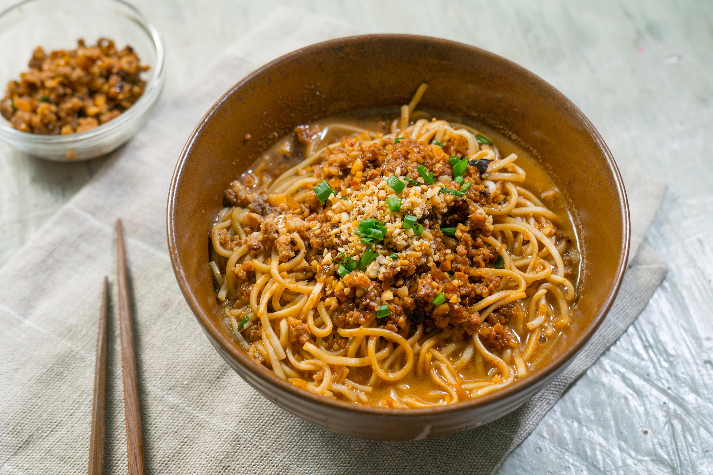

Dan Dan Noodles

It serves two people, either in one big bowl to share, or in two separate bowls. If you wish, you can blanch a handful of leafy greens in the noodle cooking water and add to the bowl, as shown in the photograph.
Ingredients
- 3 tbsp cooking oil
- 4 oz (100g) ground pork
- 2 tsp Shaoxing wine
- 1 tsp sweet fermented sauce
- 1 tsp light soy sauce
- Salt
- 7 oz (200g) dried Chinese wheat flour noodles, or 11 oz (300g) fresh noodles
For the sauce:
- ¾ cup (200ml) chicken stock (or noodle cooking water)
- 2 tsp light soy sauce
- ¼ tsp salt
- 1 tsp Chinkiang vinegar
- 2–4 tbsp chilli oil with its sediment, to taste
- 4 tbsp finely sliced spring onion greens
- 5 tbsp Sichuanese ya cai
Instructions
- Put the oil in a seasoned wok over a medium flame and swirl it around. Add the meat and stir-fry until it changes color. Add the Shaoxing wine, stir a few times, then add the sweet fermented sauce and stir-fry until you can smell it. Season with the soy sauce, and salt to taste, and press the meat against the wok with your scoop or ladle to encourage it to separate out into little morsels. When the meat has separated and is fragrant but still juicy, remove from the wok and set aside.
- Bring a panful of water to a boil and, in a separate pan, reheat the stock, if using.
- Boil the noodles to your liking in the water. While they are cooking, place all the sauce ingredients except for the stock in a serving bowl.
- When the noodles are ready, drain them in a colander (reserving some of the cooking water if you are not using stock). Add the stock or noodle cooking water to the sauce. Place the noodles in the bowl, top with the pork and serve. Before eating, give the noodles a good stir until the sauce and meat are evenly distributed.